NetSuite
NetSuite is a cloud business management suite that offers comprehensive software for an organization, with software products encompassing ERP/Financials, CRM, and ecommerce.
How to connect to NetSuite on Workato
In order to connect to NetSuite and allow for data to flow to and from NetSuite via Workato, we need to generate a token ID, token secret, consumer key and consumer secret in NetSuite. In this section, we'll be going through how to set these up in detail.
Enable Web Services access in your NetSuite instance
Create an integration record
Create an integration role with required permission levels for your integration
Assign the above integration role to the integration user
Create access token
1. Enable Web Services access in your NetSuite instance
First, API Access needs to be enabled in NetSuite. Go to Setup>Company>Enable Features>SuiteCloud.
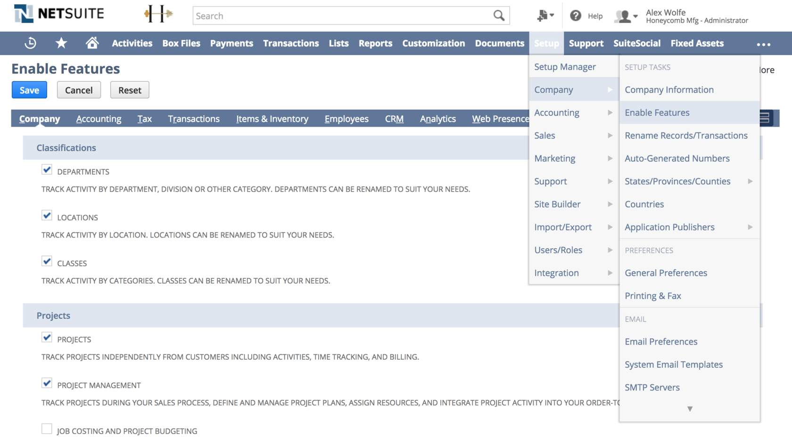 In NetSuite, go to Setup>Company>Enable Features>SuiteCloud
Check the Web Services checkbox and Token-based Authentication checkbox, then save the settings.
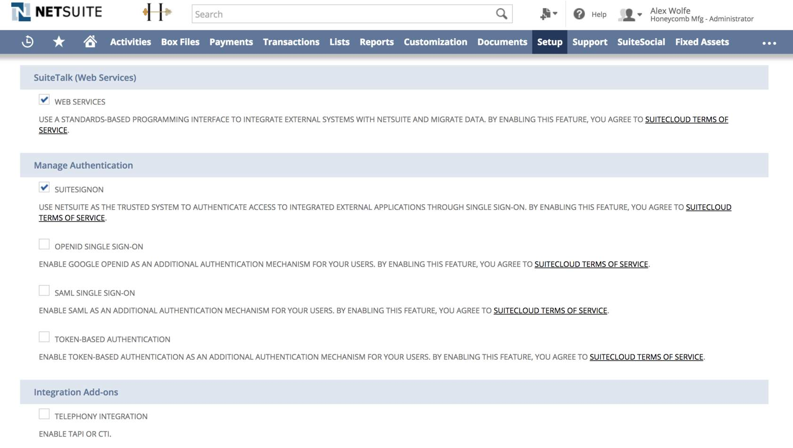 In the SuiteCloud tab, check the SuiteTalk Web Services checkbox
Now that we've enabled Web Services and Token-based authentication, we need to set up a user with the proper set of permissions to read from or write to NetSuite via the API. We will use this user to connect to NetSuite from Workato. Typically, this user is a special integration user whose sole function is to enable the integration.
2. Create an integration record
Now, create an integration record in your NetSuite instance. Go to Setup>Integration>Manage Integrations>New.
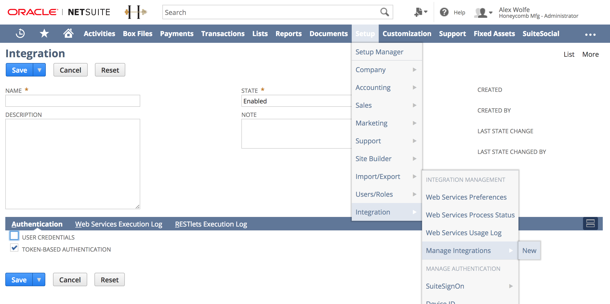 In NetSuite, go to Setup>Integration>Manage Integrations>New
Now, add a name for this integration. Make sure to select Enabled in the State pick list and check the Token-based Authentication checkbox, then save this integration.
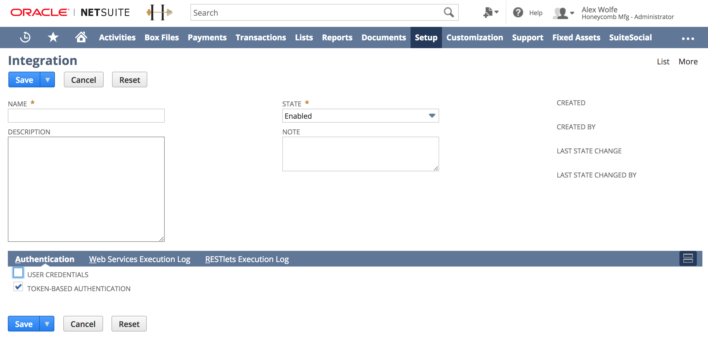 Check the Token-based Authentication checkbox
Now that we have created an integration record, save the consumer key and consumer secret. This will be used for connecting to NetSuite on Workato.
3. Create an integration role with required permission levels for your integration
We need to create a specialized role for our integration user. We need to enable Full level for these permissions for the integration user:
- Web Services
- User Access Tokens
- Access Token Management
Also, add any further permissions the user needs to have for our integration to work.
In the example below, we're creating a new role and giving it all 3 permissions. However, if you wish to enable an existing role to be able to read from and write to NetSuite via the API, simply add the required permission to the existing role.
A. In NetSuite, go to Setup>Users/Roles>Manage Roles>New.

B. Check the Web Services Only Role checkbox if you don't want this role to have the ability to login to NetSuite (i.e. if you want this user to only have the ability to connect to NetSuite via the API) 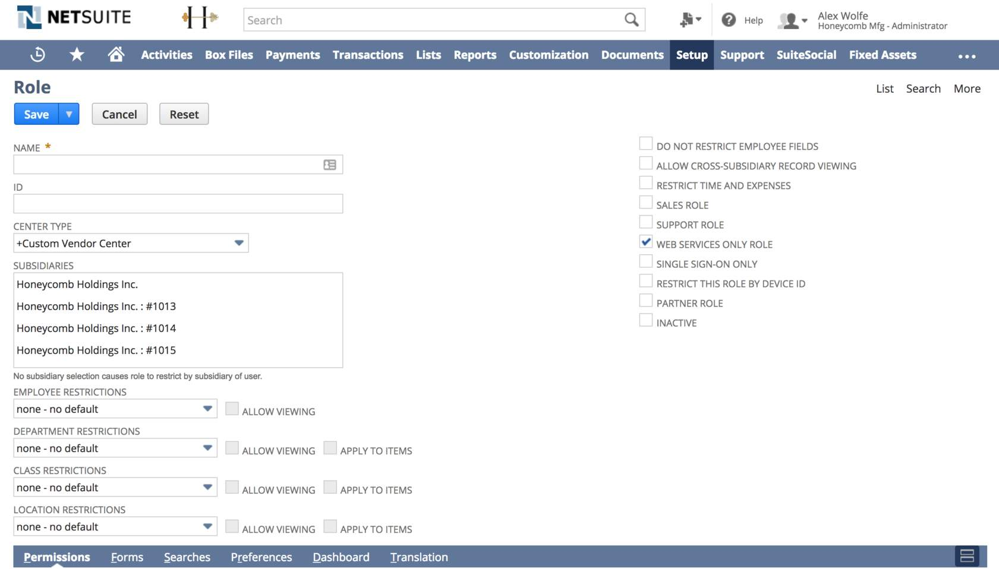
C. Under Permissions>Setup, this role needs to have the 3 permissions with a Full level 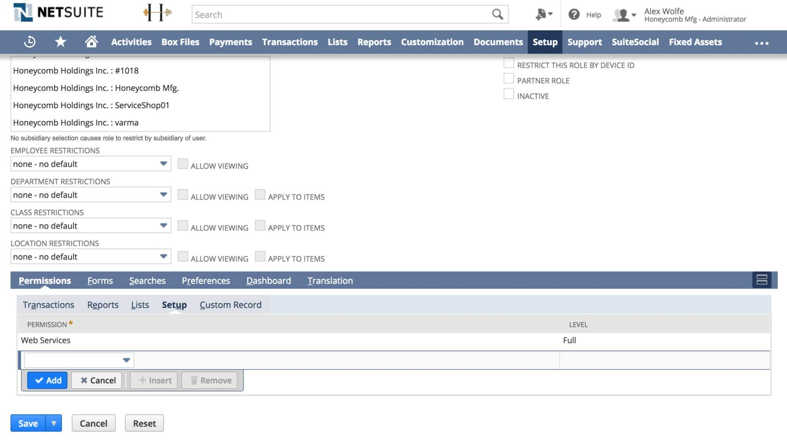
D. Under the other tabs in Permissions, set up the permissions and permission levels you wish this role to have. This should correspond with what you wish to do with your Workato integration, e.g. if you wish to create sales orders in NetSuite, you should have the Sales Order - Create permission level, and if you wish to be able to create and update and read sales order data, select the Full permission level. 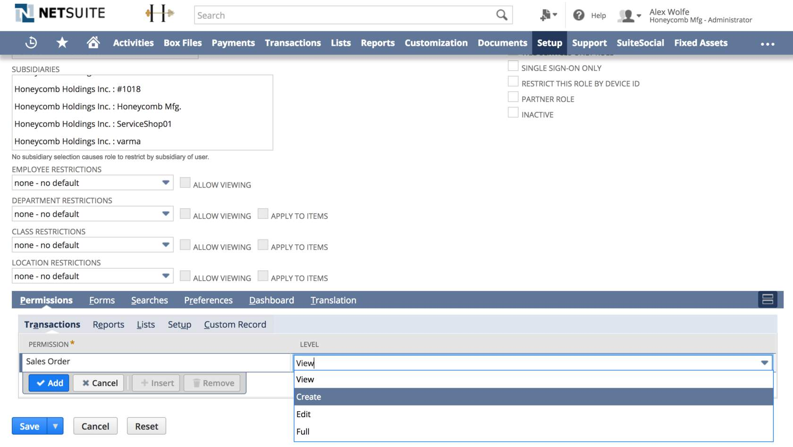
4. Set up an integration user
Once we've set up our integration role, we need to assign this role to our integration user.
In NetSuite, go to Setup>Users/Roles>Manage Users to edit an existing user or create a new user.
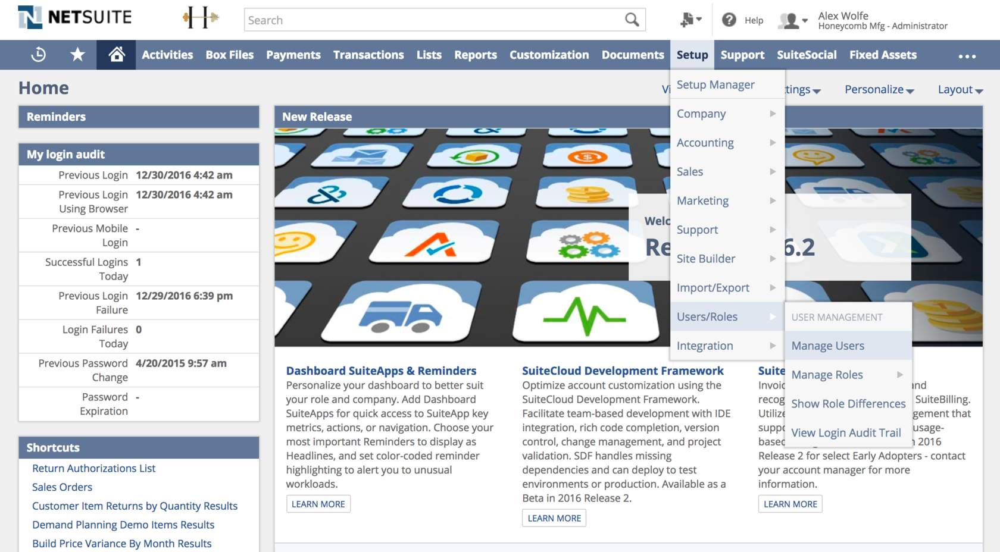 Navigate to Setup>Users/Roles>Manage Users
When editing a user, under the Access tab, ensure you assign this user the integration role you've just created/edited above.
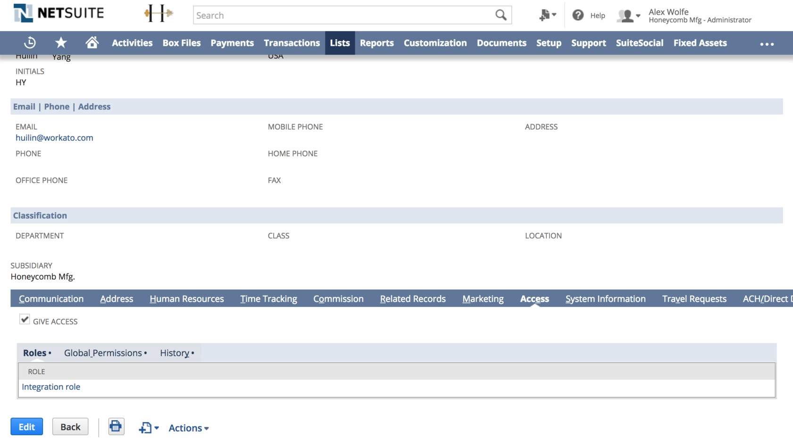 Assign integration role to user
5. Create access token
Finally, create an access token for the integration user. Go to Setup>Users/Roles>Access Tokens>New.
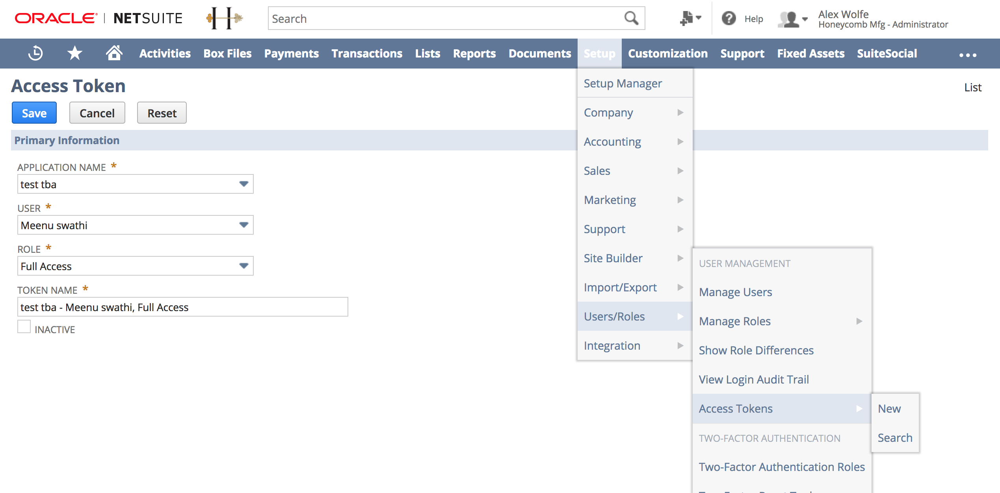 In NetSuite, go to Setup>Users/Roles>Access Tokens>New
Select the integration record, integration user and role we created earlier, then click save. Record the token ID and token secret somewhere and keep it confidential. This will be used for connecting to NetSuite on Workato.
6. Connect to NetSuite on Workato
NetSuite asks for the following information to connect.

The following details more information about each field.
- Account ID
Retrieve the account ID of your NetSuite instance from Integration>Web Services Preferences
- Consumer key
Consumer key from the integration record that you've just created
- Consumer secret
Consumer secret from the integration record that you've just created
- Token ID
Token ID from the access token that you've just created
- Token secret
Token secret from the access token that you've just created
- Account timezone
Select the timezone of your NetSuite instance in order to ensure that the dates in your NetSuite account are handled accurately. All datetime values used in actions/triggers for the NetSuite connection will be based on this timezone.
- Ignore read-only fields
If set to Yes, read-only fields will be omitted from create and update actions. If set to No, read-only field will appear in create and update actions. Trying to create or update these read-only field will cause an error.
Working with the NetSuite connector
Common NetSuite fields and possible disparity between object/field names in NetSuite and Workato
The NetSuite connector is able to retrieve your standard or custom NetSuite objects and the associated set of standard and custom fields. Whenever you configure your trigger or action, you would first need to select the specific object you wish to interact with.
Take note that objects in your NetSuite instance might have been renamed, in which case they would appear in Workato with the original name (instead of the new name). Do check with your NetSuite admin or reach out to us if it looks like you're not able to find your object on Workato!
If you're configuring an action, you would see the fields selector pop up with a list of the standard and custom fields that belongs to the selected object. Simply select the fields you wish to interact with.
 NetSuite fields selector
NetSuite fields selector
Some fields are displayed with their internal API names instead of their labels in NetSuite. The following list brings you through the more common NetSuite fields, some of which might have a different name in Workato.
- Internal ID
Every NetSuite record has a unique internal ID, which can be found in the URL when viewing the specific NetSuite record. Internal IDs are usually used to specify the exact record to update for update object actions. They can be obtained from the datatree of create object actions or search object actions.
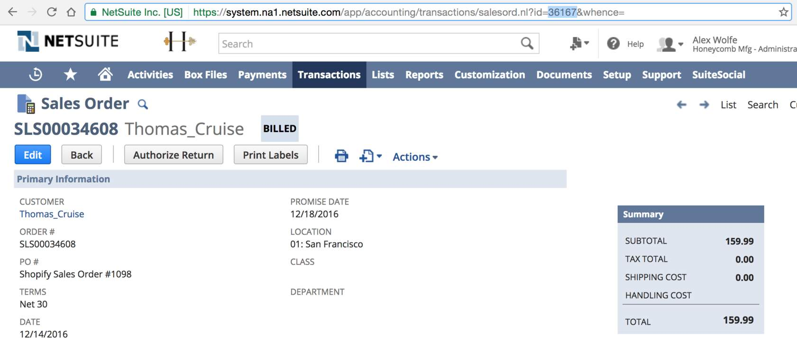 Internal ID of a specific sales order as seen in the URL
- External ID
Every NetSuite record has an external ID field to store the IDs of corresponding objects in other systems - for example, you can store the corresponding Salesforce ID of a NetSuite customer in that customer's external ID field.
This field is a standard field in NetSuite, but typically not visible by default in NetSuite.
- IDs
When linking an object to another object via Workato (e.g. when creating a transaction and trying to link this transaction to a class, department or subsidiary), NetSuite usually asks for the IDs of the object you wish to link to. To find these IDs, you would typically need to search for these objects (e.g. in this case, to search for your class, department or subsidiary). Alternatively, you might want to store these values in a lookup table for easy reference without having to execute a search in your NetSuite instance.
- Custom fields
The recipe is able to retrieve the custom fields of your selected NetSuite object for you to read from or write to. All custom fields are grouped in Workato.
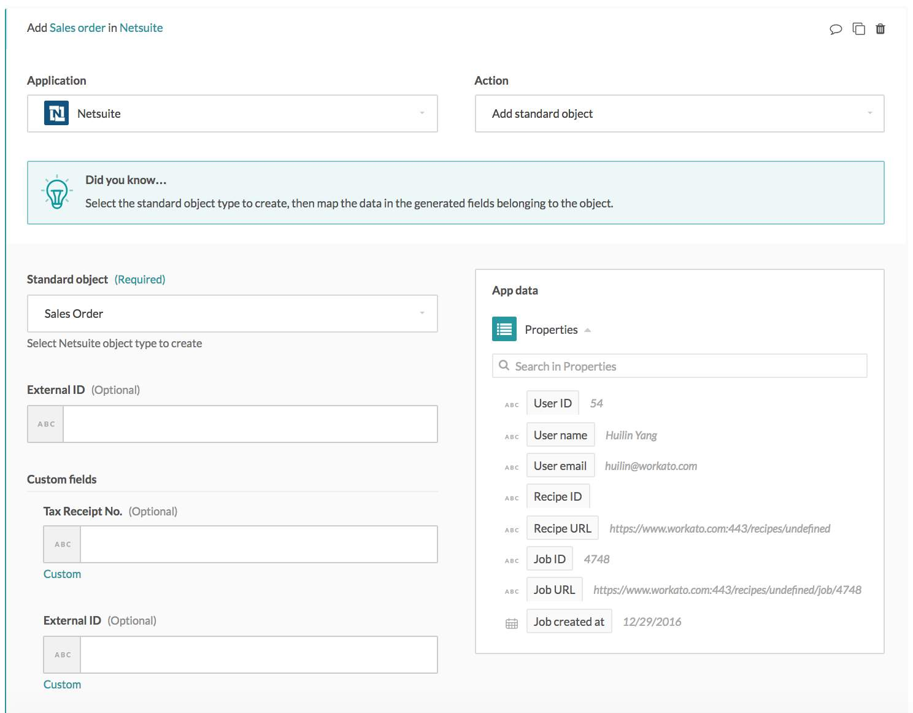 Custom fields Tax Receipt No. and External ID
- Item list
For transaction objects that contains line items, the available fields within each line item can be found grouped within the item list field.
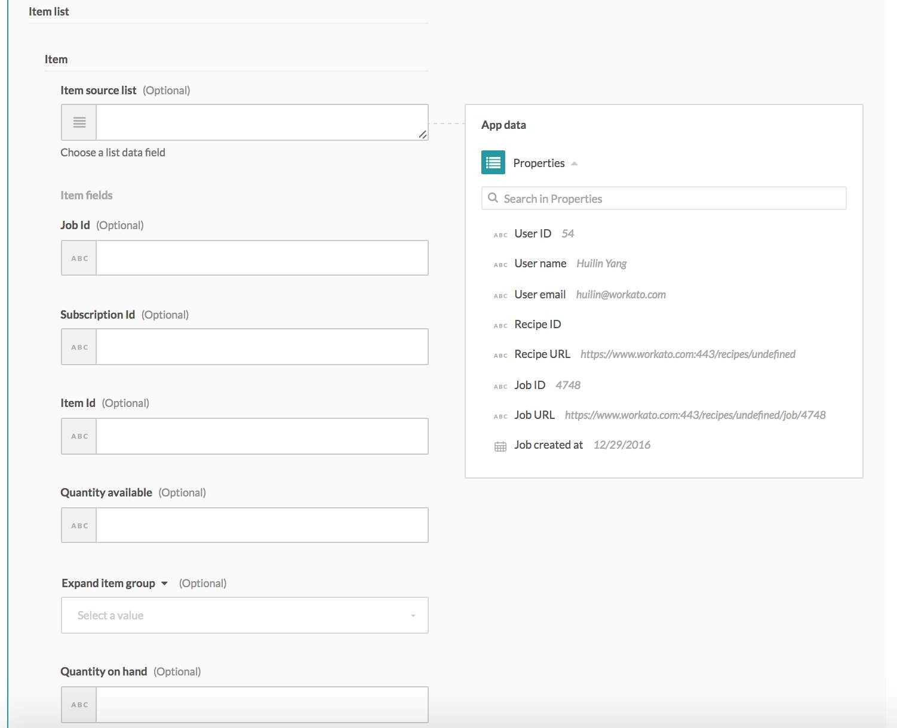 Item list displayed in the create sales order action
New classification object trigger
Certain objects in NetSuite are classification objects, such as departments, locations and classifications. Select the classification object to monitor.
When the recipe is first started, all the existing instances of the selected object will be picked up by the recipe. Subsequently, only newly created instances will be processed by the recipe.
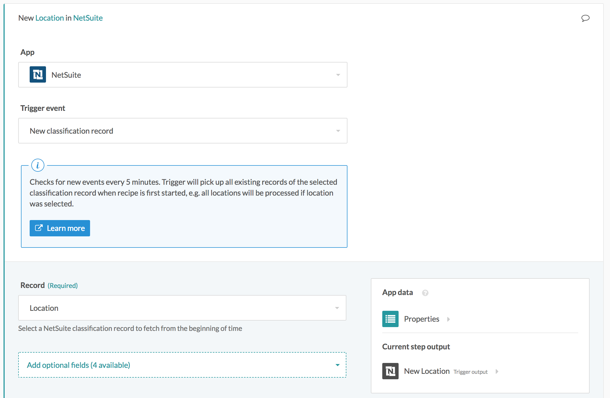 New classification object trigger
For example, if I select departments as the object to trigger upon, all existing department objects will be picked up by the trigger when the recipe is first ran. Subsequently, if the recipe is kept running, only departments which have been newly created will be picked up by the recipe.
Trigger behaviour when recipe is stopped and restarted
Even if the recipe is stopped, when it's restarted again, all departments created in the time during which the recipe was stopped will be picked up by the recipe.
New standard object and new custom object trigger
The new standard object and new custom object trigger are very similar, so this section will cover both.
Configuring the trigger
To use this trigger, we need to first select the standard object or the custom object to monitor. We also need to input the datetime in the From field to pinpoint the exact date from which the recipe should start processing records.
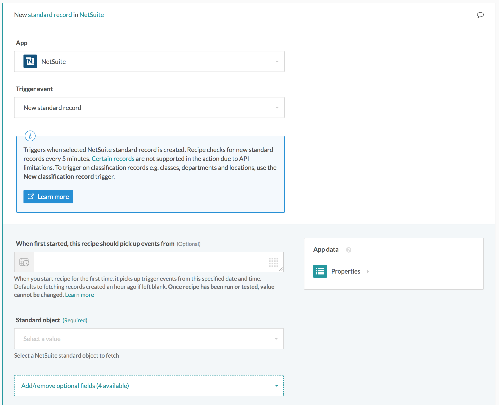 NetSuite new object trigger - unconfigured. Select the object to monitor for newly created records.
When the recipe is first started, all the existing instances of the selected object created after the datetime in the From field will be picked up by the recipe. Subsequently, only newly created instances will be processed by the recipe.
For example, I've selected sales order and 1 Jan, 2017 midnight for my trigger as below.
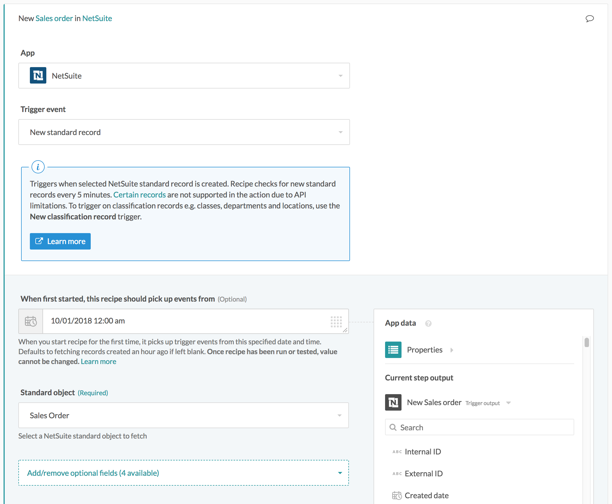 NetSuite new object trigger - configured
When I first start my recipe all sales orders created from or after 1 Jan, 2017 midnight, will be processed. Subsequently, if the recipe is kept running, only sales orders which have been newly created will be picked up by the recipe.
Trigger behaviour when recipe is stopped and restarted
Even if the recipe is stopped, when it's restarted again, all sales orders created in the time during which the recipe was stopped will be picked up by the recipe.
New/updated standard object and new/updated custom object trigger
The new/updated standard object and new/updated custom object trigger are very similar, so this section will cover both.
Configuring the trigger
To use this trigger, we need to first select the standard object or the custom object to monitor. We also need to input the datetime from the From field to pinpoint the exact date from which the recipe should start processing records.
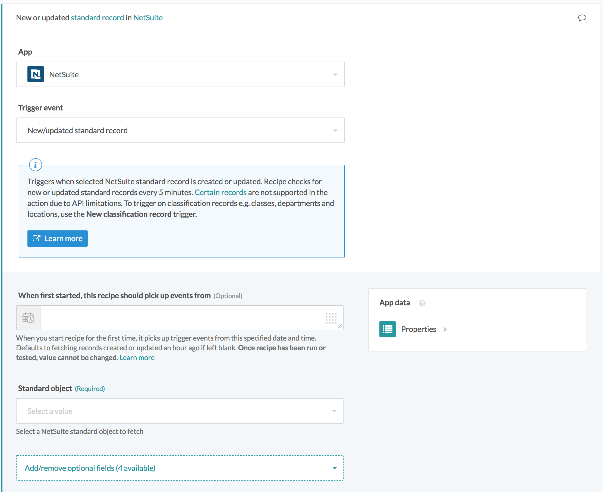 NetSuite new/updated object trigger - unconfigured. Select the object to monitor for newly created or updated records.
When the recipe is first started, all the existing instances of the selected object created or updated after the datetime in the From field will be picked up by the recipe. Subsequently, any newly created instances or updated instances will be processed by the recipe.
For example, I've selected sales order and 1 Jan, 2017 midnight for my trigger as below.
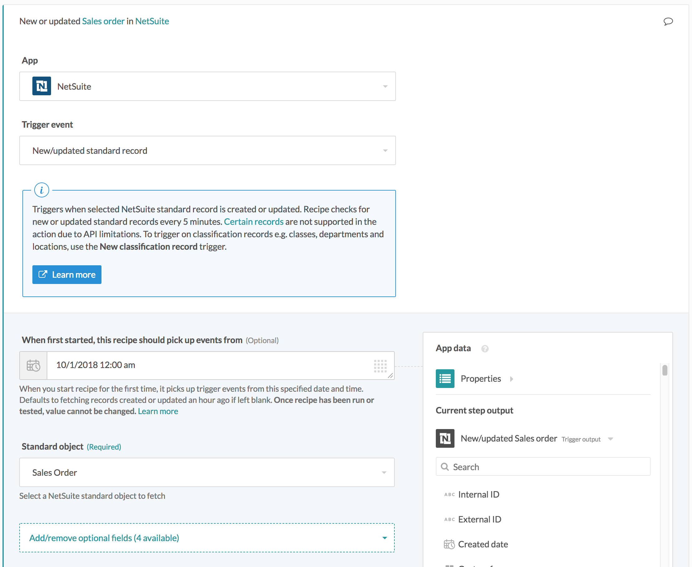 NetSuite new/updated object trigger - configured
When I first start my recipe all sales orders created or updated from or after 1 Jan, 2017 midnight, will be processed. Subsequently, if the recipe is kept running, any sales orders which have been newly created or updated will be picked up by the recipe.
Trigger behaviour when recipe is stopped and restarted
Even if the recipe is stopped, when it's restarted again, all sales orders created or updated in the time during which the recipe was stopped will be picked up by the recipe. Do note, however, that the recipe will only pick up the last (most updated) version of search record. For example, if a record was newly created and had 3 updates made to it while the recipe was stopped, the recipe will only pick up the last updated version of the record when it's restarted again.
New saved search result for object trigger
The New saved search result for object trigger retrieves new records that meet the saved search's criteria, e.g. for a saved search that fetches customer records of industry type Hardware, new customers created of the industry type Hardware will be picked up as a trigger event.
Existing customers whose industry type is changed to Hardware will also be picked up as a trigger event if their Date created value is valid for the recipe (falls after the datetime in the From field specified in the trigger).
To ensure the trigger works, we need to make sure that the columns Internal ID and Date created are configured as result columns in the saved search. To do this, navigate to the saved search page to edit it.
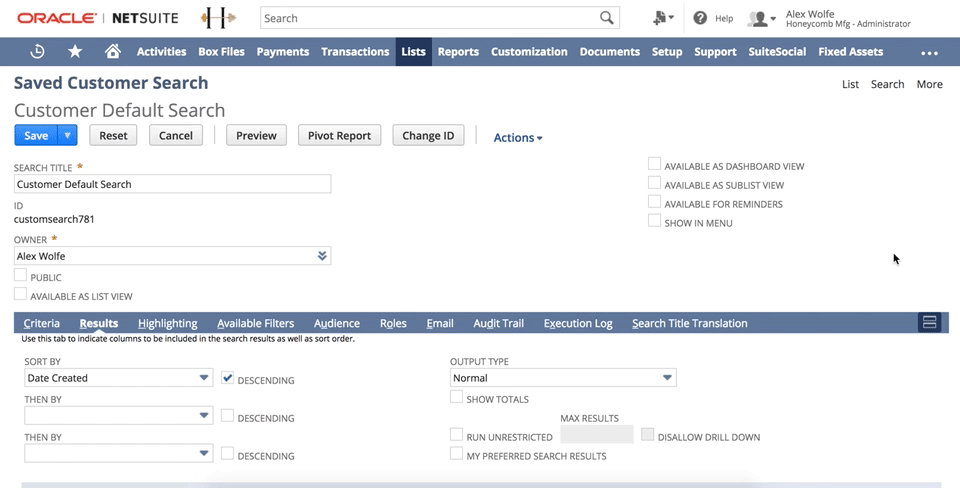 Edit the saved search
Navigate to the Results page's Columns section, and add the two fields to the list of columns if it's not there.
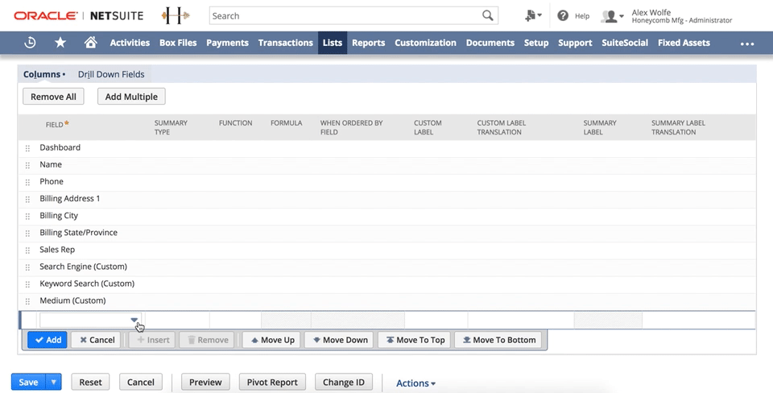 Add Internal ID and Date created columns in saved search for New trigger
Also, make sure to remove the Dashboard column in the saved search's results if it's present. Having this column will cause the trigger to throw an error.
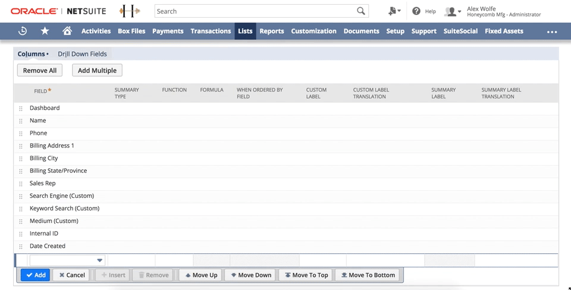 Remove Dashboard column in saved search
Once this setup has been done, we can proceed to configure the trigger. This configuration is similar to that for New/updated saved search result trigger:
- Select the object type we wish to retrieve the saved searches for. In our case, we selected the customer object.
- Once the object type has been selected, select the saved search to listen to for new records.
- Specify the date time in the From field. Only records created after this From date will be retrieved by the recipe. This means that, when an existing record meets the saved search criteria, it will only be picked up by the recipe if it has a Date created value after the From value.
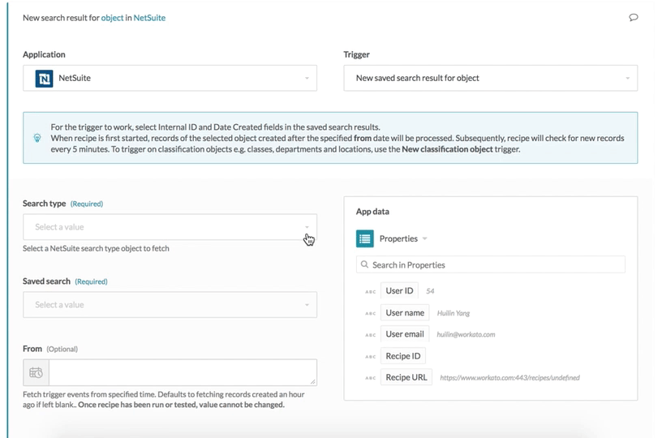 Configure the new saved search results trigger
New/updated saved search result for object trigger
The New/updated saved search result for object trigger retrieves new and updated records that meet the saved search's criteria, e.g. for a saved search that fetches customer records of industry type Hardware, new or updated customers of the industry type Hardware will be picked up as a trigger event.
Existing customers whose industry type is changed to Hardware will also be picked up as a trigger event.
To ensure the trigger works, we need to make sure that the columns Internal ID and Last modified are configured as result columns in the saved search. To do this, navigate to the saved search page to edit it.
Add Internal ID and Last modified columns in saved search for New/updated trigger
Also, make sure to remove the Dashboard column in the saved search's results if it's present. Having this column will cause the trigger to throw an error.
Remove Dashboard column in saved search
Once this setup has been done, we can proceed to configure the trigger. This configuration is similar to that for New saved search result trigger:
- Select the object type we wish to retrieve the saved searches for. In our case, we selected the customer object.
- Once the object type has been selected, select the saved search to listen to for new records.
- Specify the datetime in the From field. Only records created or updated after this From date will be retrieved by the recipe.
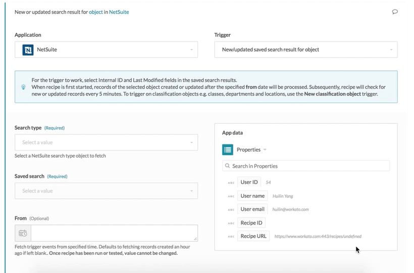 Configure the new/updated saved search results trigger
Add standard object and add custom object action
The add standard object and add custom object actions are similar except that the former works with standard NetSuite objects, while the latter works with custom objects created by your organization.
In this section, we'll be covering how to use the add standard object action, which will be applicable for the add custom object action as well.
Configuring your add object action
To configure your action, first select the object you would like to create. In this case, let's create a sales order. After you have selected the object you wish to create, the recipe will retrieve the fields of your selected NetSuite object.
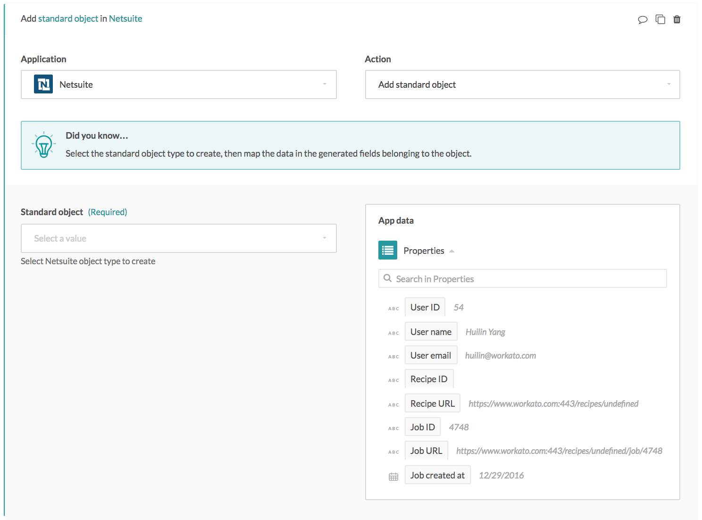 NetSuite add object action - unconfigured. Select the object to create.
Selecting and mapping your fields
After selecting the object you wish to create, you'd need to select the specific fields you wish to write to when creating your NetSuite record.
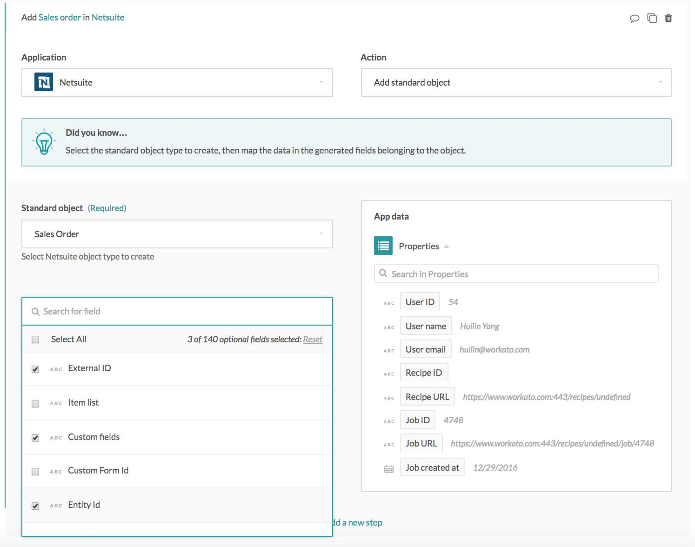 After selecting your object, select the specific fields you wish to write to
Take note that some NetSuite fields are displayed with their internal API names instead of their labels in NetSuite. For example, entity ID refers to the customer/vendor to attach a transaction document to, while internal ID refers to the NetSuite ID of any object.
If you can't find the field you're looking for, check with your NetSuite admin or with us!
Search standard objects action
The search standard objects action will return a list of records that match the criteria given. If no matching record is found, the action will simply return an empty array.
Configuring the search standard objects action
To carry out a search standard object action, we would first need to tell the recipe exactly what standard object category and what specific object we want to search for. The following displays an unconfigured search standard object action.
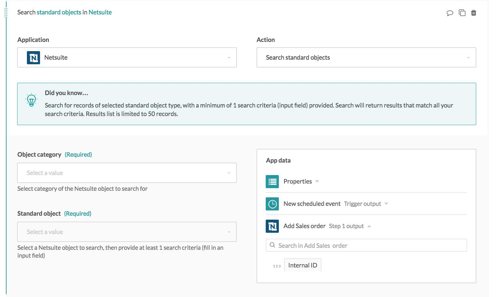 Unconfigured search standard object action. Select the category and specific object to search for.
Regardless of category, we're able to search for any standard objects by its internal ID or its external ID. As these IDs are unique, we would only retrieve a maximum of 1 record if we search by IDs.
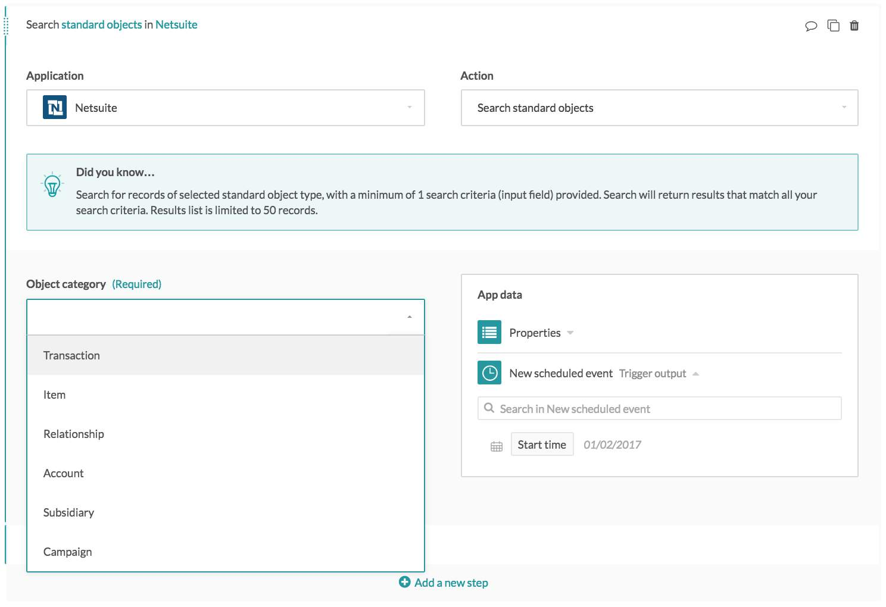 Available categories to search from
Regardless of category, we're able to search for any standard objects by its internal ID or its external ID. As these IDs are unique, we would only retrieve a maximum of 1 record if we search by IDs.
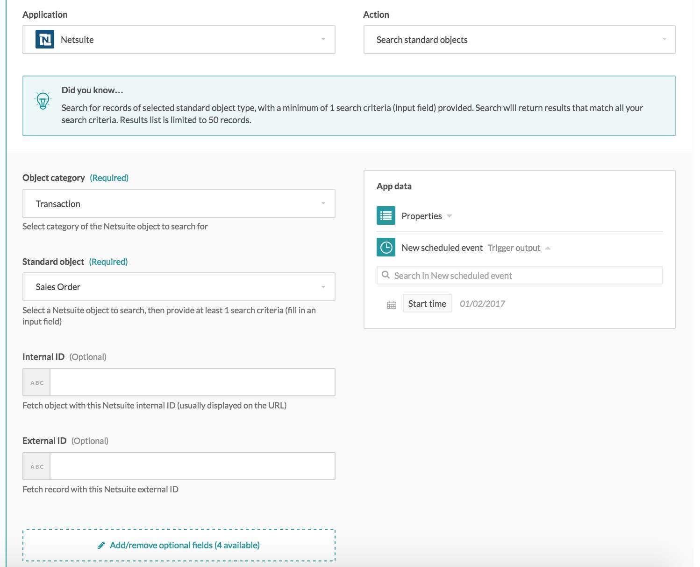 Ability to search NetSuite record by unique internal ID or external ID
Depending on the object category selected, we would be able to search by additional fields specific to that category.
For example, some of the available fields to search by for transaction categories is its status - opened or closed status, and its number.
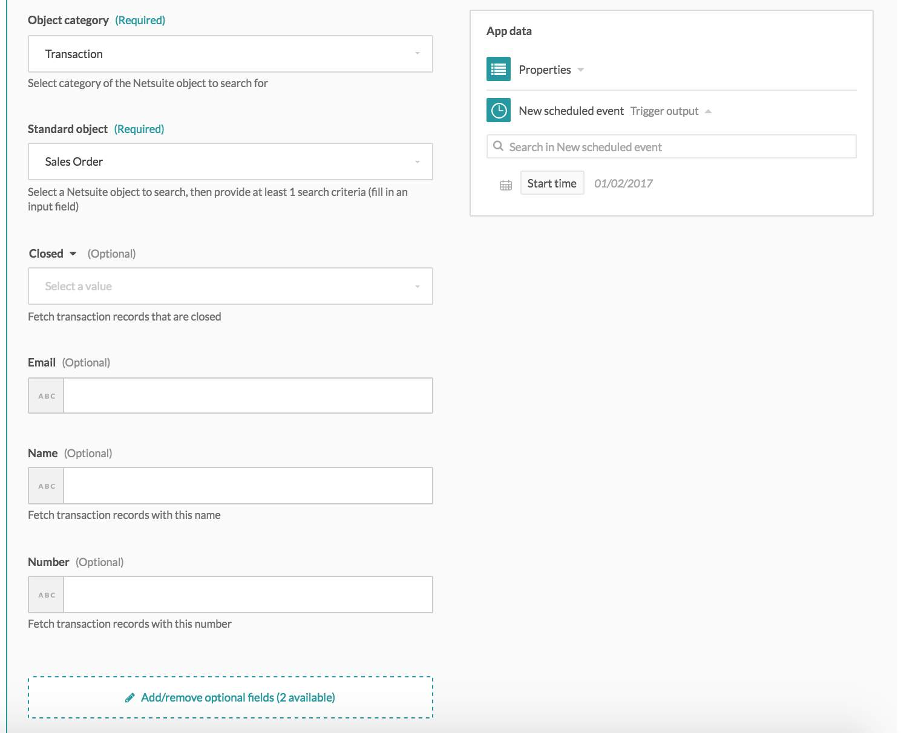 Available fields to search by for transaction category
Some of the available fields to search by for relationship categories is its company name and email.
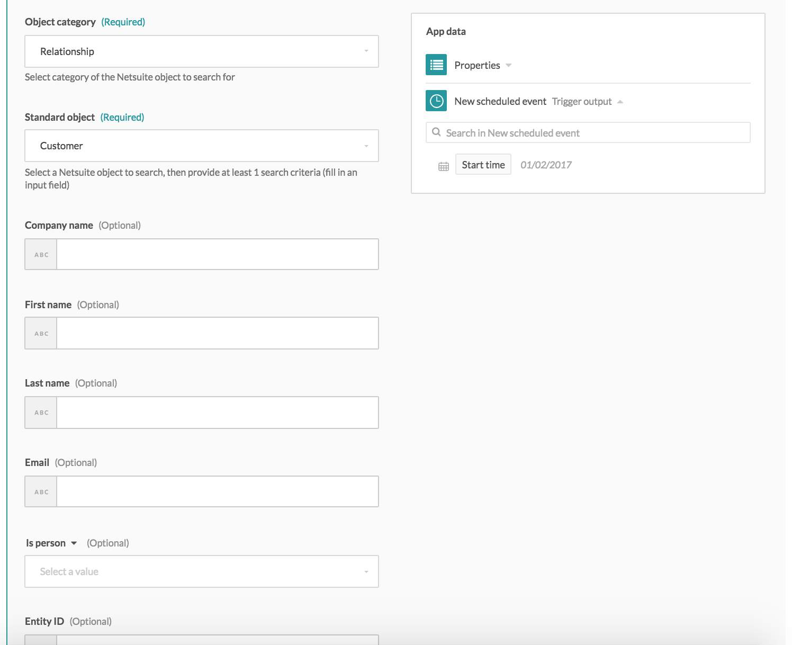 Available fields to search by for relationship category
When selecting the fields to search by in the NetSuite connector, take note that some NetSuite fields are displayed with their internal API names instead of their labels in NetSuite. For example, entity ID refers to the customer/vendor to attach a transaction document to, while internal ID refers to the NetSuite ID of any object.
If you can't find the field you're looking for, check with your NetSuite admin or with us!
Search custom objects action
The search custom objects action will return a list of records that match the criteria given. If no matching record is found, the action will simply return an empty array.
Configuring the search custom objects action
To carry out a search custom objects action, we would first need to tell the recipe exactly what specific custom object we want to search for. The following displays an unconfigured search custom objects action.
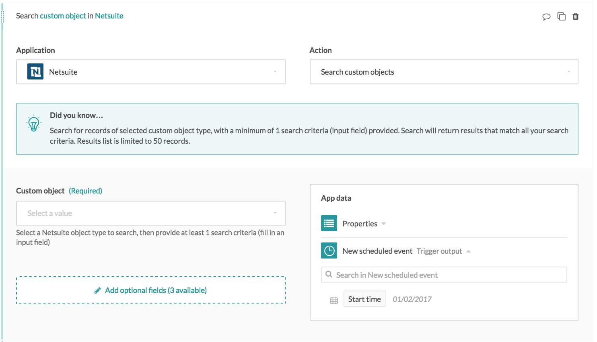 Unconfigured search custom object action. Select the the specific object to search for.
Regardless of selected object, we're able to search for any custom objects by its internal ID or its external ID. As these IDs are unique, we would only retrieve a maximum of 1 record if we search by IDs.
Depending on the object selected, we would be able to search by additional fields specific to that object.
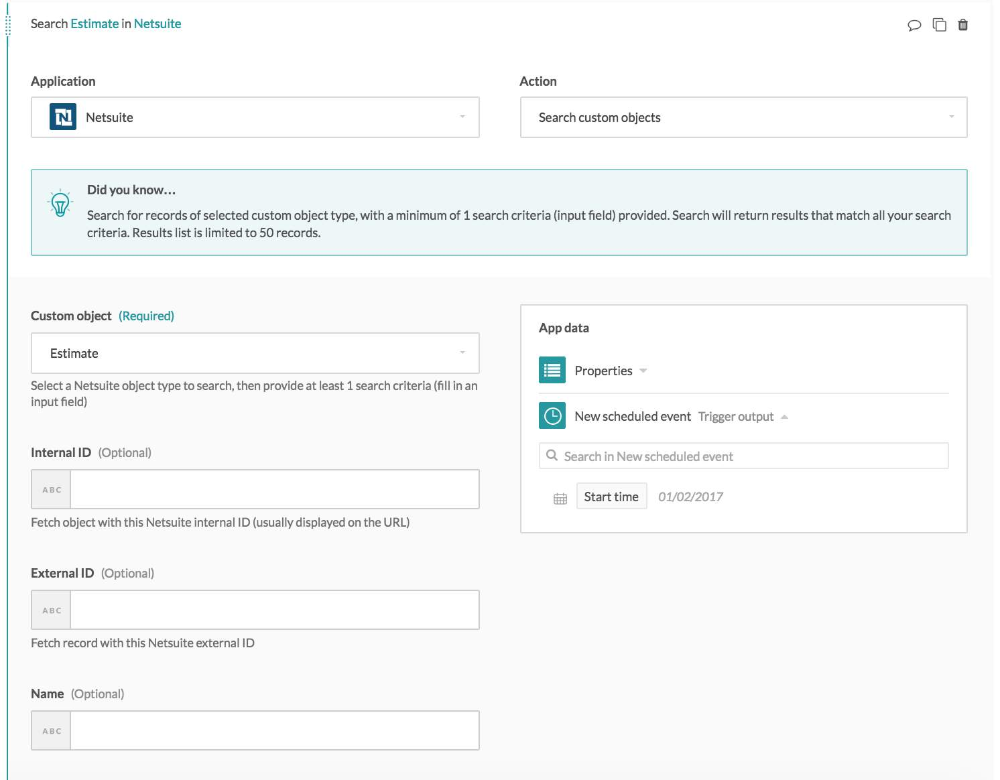 Available fields to search by for the custom object estimate
When selecting the fields to search by in the NetSuite connector, take note that some NetSuite fields are displayed with their internal API names instead of their labels in NetSuite. For example, entity ID refers to the customer/vendor to attach a transaction document to, while internal ID refers to the NetSuite ID of any object.
If you can't find the field you're looking for, check with your NetSuite admin or with us!
Update standard object and update custom object action
The update standard object and update custom object actions are similar except that the former works with standard NetSuite objects, while the latter works with custom objects created by your organization.
In this section, we'll be covering how to use the update standard object action, which will be applicable for the update custom object action as well.
Functions of the update object actions
The following lists the various types of updates you can do with the update object action.
- Overwrite existing field values with new values (you can't delete an existing value of a field and change it to null/a blank value, however)
- Append new lines to records (e.g. add additional line items to your sales order)
- Replace all lines in records (e.g. overwrite all existing line items in your sales order with a new set of line items)
Configuring your update action
- First, specify the object to update via internal ID or external ID To update your NetSuite record, you first need to specify which record to update. You can use either the internal ID or the external ID to specify the record - all other fields with values passed into them will overwrite the original existing value in the NetSuite record.
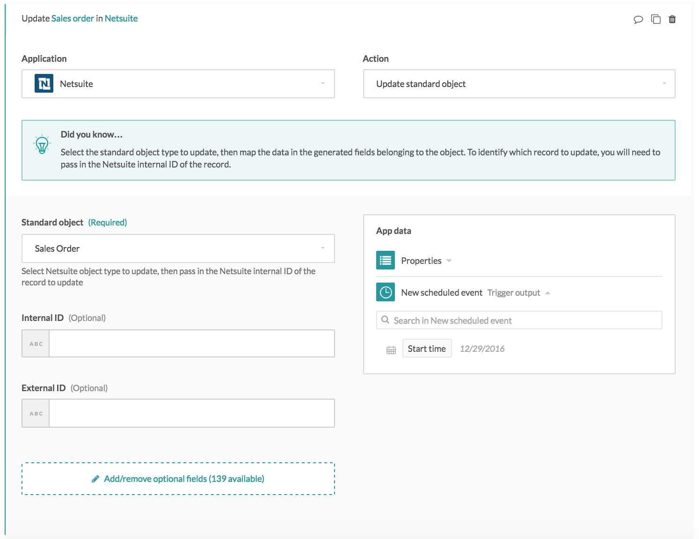 Specifying the NetSuite record to update with either internal ID or external ID
Next, configure the action to carry out the type of update you want: overwrite existing values or append values
Overwrite existing field values
To do this, simply select the fields you wish to write to, then input the values or variables you wish to overwrite it with. For example, we might have a Shopify ecommerce site set up, and we want to move all our sales orders made in Shopify into NetSuite for inventory and delivery management.
In the following recipe, we're moving all newly created sales orders and all updates to existing orders from Shopify into NetSuite. Whenever there's a new/updated Shopify order, we try to search for the corresponding NetSuite order. If it exists, we'd update that NetSuite order. If it doesn't exist, we'll create a NetSuite order.
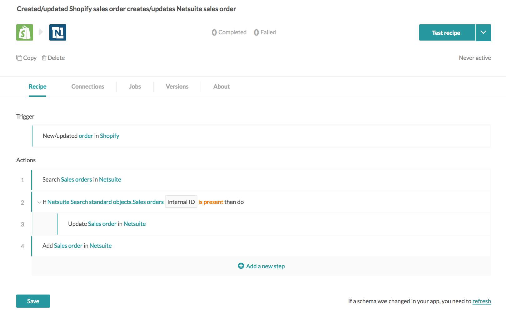 Recipe that syncs Shopify sales orders into NetSuite.
In Step 3, which is the branch of the recipe we'd execute if we manage to find a NetSuite order that corresponds to the incoming Shopify sales order, we pass in the internal ID of the NetSuite order we've found.
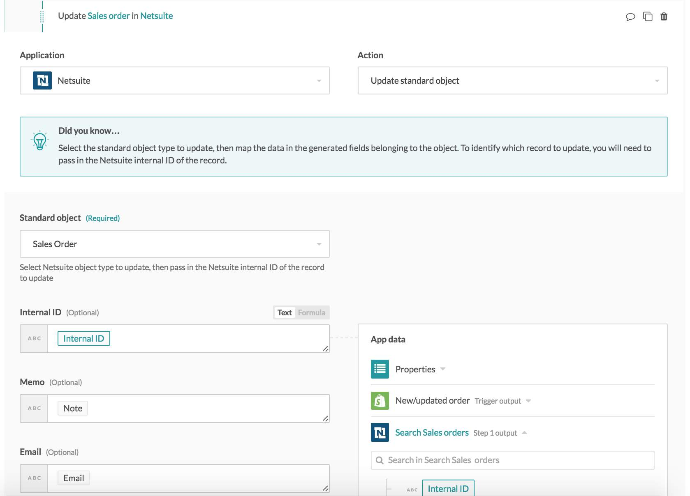 Specify NetSuite record to update via internal ID
In this update action, we're taking the values of the note and email fields in the Shopify order, and updating the values of the memo and email fields in the corresponding NetSuite order.
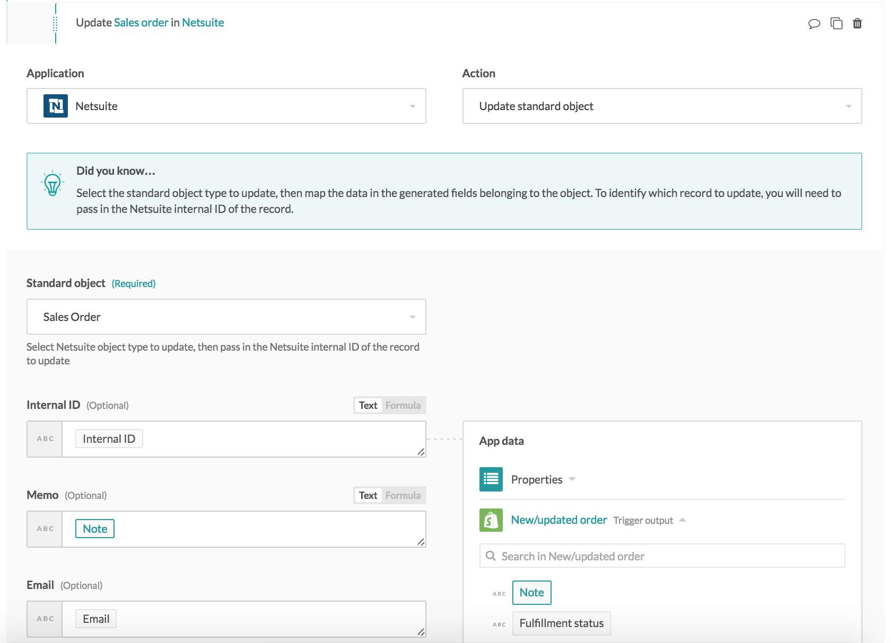 Update memo and email fields
When selecting the fields to update in the NetSuite connector, take note that some NetSuite fields are displayed with their internal API names instead of their labels in NetSuite. For example, entity ID refers to the customer/vendor to attach a transaction document to, while internal ID refers to the NetSuite ID of any object.
If you can't find the field you're looking for, check with your NetSuite admin or with us!
- Append new lines to object VS replacing all lines in the object
There are numerous NetSuite objects which contains one or more lists. For example, transaction objects such as sales orders have lists of line items. When updating objects in NetSuite, with most lists you have the ability to define whether you'd like to append more elements to the list, or if you'd like to replace the existing list with a whole new list.
First specify the object you'd like to update, then the specific ID of the object to update. Do the same data mapping for the item list as you would usually do.
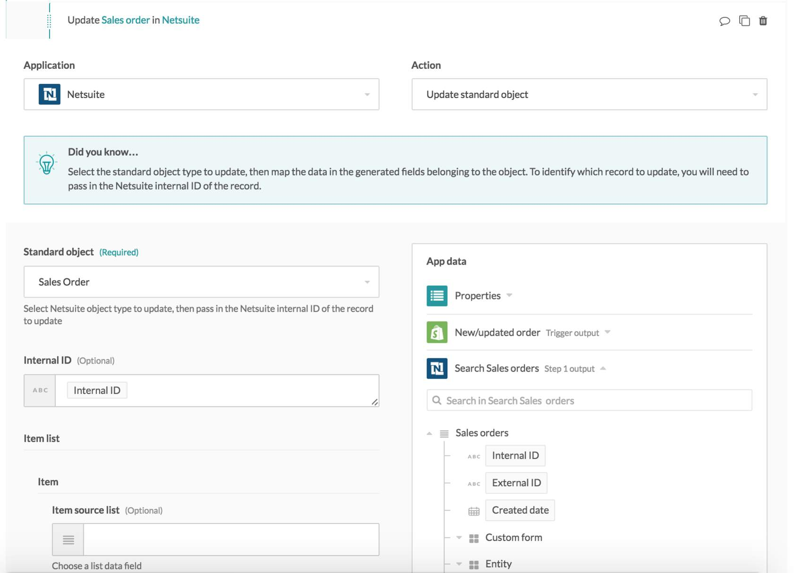 Select object and record ID to update
At the end of most NetSuite lists, you will see the Replace all option. Select True to overwrite all existing list items, select False to append new list items to existing list of items.
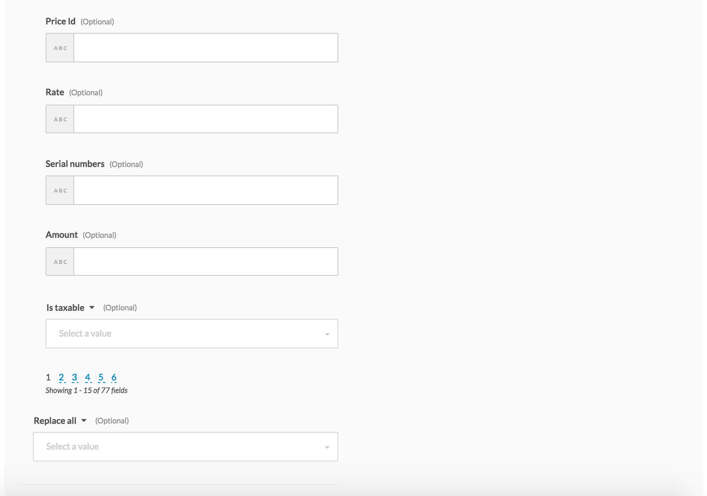 Replace all picklist found at the end of NetSuite lists
When selecting the fields to update in the NetSuite connector, take note that some NetSuite fields are displayed with their internal API names instead of their labels in NetSuite. For example, entity ID refers to the customer/vendor to attach a transaction document to, while internal ID refers to the NetSuite ID of any object.
If you can't find the field you're looking for, check with your NetSuite admin or with us!